常に、前へ、進む！！ [梅吉]
洗面所のクローゼットをプチリフォームしようと壁紙を買ったら
こんななが〜いダンボールの筒に巻かれて届きました。

これは、もう、猫様のおもちゃにするしかないですよね！

筒の反対側でじゃらしを振ると


大喜び！！

おかーさんが反対側から覗くと
なんとかちょっかいを出そうと手を入れてきますwww
（18秒 音は出ません）
入れると思っているらしい( ´艸｀)
額にまあるく筒の跡がついているのが見所ですw
常に前へ進み決してあきらめない梅吉。
梅吉はラグビー日本代表を全力で応援します！！
ラグビーW杯2019日本大会、次回の日本戦は予選プール最後の試合となります。
この試合に勝つか引き分けると今大会ベスト８入り＆決勝トーナメントに進出決定です。
日本のラグビー史上初の快挙なんですよ。
その注目の試合は！
10月13日（日） 19:45〜 日本 v スコットランド 日テレ系列にて！
日テレの中継はキライなんですけどネ
日本チームの活躍はもちろん何気にオシャレなスコットランドのジャージ
（襟裏と胸元にグリーンのタータンチェック模様あり）と
スコットランドの人なのに「イタリアのちょいワルおやじ風」な
スクラムハーフ、レイドロー選手の動きにも注目です！！
どちらのチームにも最高のパフォーマンスを期待してます＾＾
 ↑ガブッと一押し↑
↑ガブッと一押し↑
こんななが〜いダンボールの筒に巻かれて届きました。
これは、もう、猫様のおもちゃにするしかないですよね！
筒の反対側でじゃらしを振ると
大喜び！！
おかーさんが反対側から覗くと
なんとかちょっかいを出そうと手を入れてきますwww
（18秒 音は出ません）
入れると思っているらしい( ´艸｀)
額にまあるく筒の跡がついているのが見所ですw
常に前へ進み決してあきらめない梅吉。
梅吉はラグビー日本代表を全力で応援します！！
ラグビーW杯2019日本大会、次回の日本戦は予選プール最後の試合となります。
この試合に勝つか引き分けると今大会ベスト８入り＆決勝トーナメントに進出決定です。
日本のラグビー史上初の快挙なんですよ。
その注目の試合は！
10月13日（日） 19:45〜 日本 v スコットランド 日テレ系列にて！
日テレの中継はキライなんですけどネ
日本チームの活躍はもちろん何気にオシャレなスコットランドのジャージ
（襟裏と胸元にグリーンのタータンチェック模様あり）と
スコットランドの人なのに「イタリアのちょいワルおやじ風」な
スクラムハーフ、レイドロー選手の動きにも注目です！！
どちらのチームにも最高のパフォーマンスを期待してます＾＾
おばちゃんっぽさとファンキーさは通じるものがあるのか・・・ [梅吉]
10月1日よりSo-net ブログの名称およびドメインが変更となり等ブログのULRが
https://umekichi-the-cat.blog.ss-blog.jp/
に変わっております。
ブックマークをされている方がいらっしゃいましたらお手数ですが変更をお願いしますm(_ _)m

70年代ソウルミュージシャンっぽいファンキーな感じを狙っていたのに・・・・・

このおばちゃんっぽさはどういうことなんだろう。

それはあにゃたがなにわっ子だからですかー！！
〜〜〜〜〜〜〜〜〜〜〜〜〜〜〜〜〜〜〜〜〜〜〜〜〜〜〜〜〜〜〜〜〜〜
スマホの地図アプリはGoogle Mapsの他にYahoo!MAPも入れています。
そのYahoo!MAPには防犯マップという機能があり
自分ちの近辺で起きた犯罪情報（ひったくりとか痴漢とか諸々）を知らせてくれるのですが・・・
先日届いた情報が
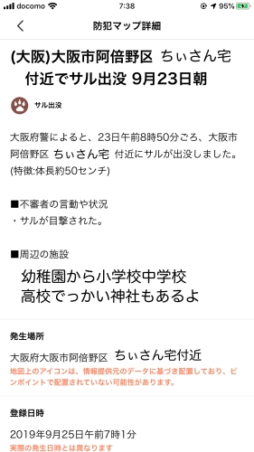
まさかの「サル出没」情報！！
まじですか・・・(ｰ ｰ;)
我が家は阿倍野区ではないのですが目撃情報があったのは歩いて5分くらいで行ける場所。
私の買い物ルートの一つでもあります。
続報も出ていないしニュースにもなってないので見間違いだった可能性もあり？
もし本当だとしたらペットなのか野生なのか不明ですけどおサルさん怖いですよね・・・
目を見ちゃいけないんでしたっけ？でも出会ったらきっと見ちゃうー！
もう二週間近くも前の情報なので何も起きないとは思っていますが
人気のないところでガサガサと音がするちょっとビクッとするこの頃です。
目の届かない部屋の窓を開けておくのもちょっと怖い。
賢いから開けて入ってきますよね・・・
もともと梅吉脱走防止用に窓枠ストッパーはしているのですが
よりきつめに締めるようにしました。
皆さんのお宅の近辺に野生動物が出没したことってありますか？？？
ちなみに我が家付近では時々いたち？フェレット？？らしきものが走ってますwww
我が家、山の麓じゃないんだけど( ；∀；)
↑ガブッと一押し↑
https://umekichi-the-cat.blog.ss-blog.jp/
に変わっております。
ブックマークをされている方がいらっしゃいましたらお手数ですが変更をお願いしますm(_ _)m
70年代ソウルミュージシャンっぽいファンキーな感じを狙っていたのに・・・・・
このおばちゃんっぽさはどういうことなんだろう。
それはあにゃたがなにわっ子だからですかー！！
〜〜〜〜〜〜〜〜〜〜〜〜〜〜〜〜〜〜〜〜〜〜〜〜〜〜〜〜〜〜〜〜〜〜
スマホの地図アプリはGoogle Mapsの他にYahoo!MAPも入れています。
そのYahoo!MAPには防犯マップという機能があり
自分ちの近辺で起きた犯罪情報（ひったくりとか痴漢とか諸々）を知らせてくれるのですが・・・
先日届いた情報が
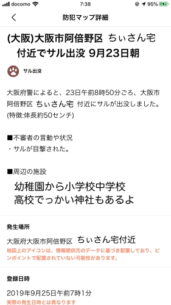
まさかの「サル出没」情報！！
まじですか・・・(ｰ ｰ;)
我が家は阿倍野区ではないのですが目撃情報があったのは歩いて5分くらいで行ける場所。
私の買い物ルートの一つでもあります。
続報も出ていないしニュースにもなってないので見間違いだった可能性もあり？
もし本当だとしたらペットなのか野生なのか不明ですけどおサルさん怖いですよね・・・
目を見ちゃいけないんでしたっけ？でも出会ったらきっと見ちゃうー！
もう二週間近くも前の情報なので何も起きないとは思っていますが
人気のないところでガサガサと音がするちょっとビクッとするこの頃です。
目の届かない部屋の窓を開けておくのもちょっと怖い。
賢いから開けて入ってきますよね・・・
もともと梅吉脱走防止用に窓枠ストッパーはしているのですが
よりきつめに締めるようにしました。
皆さんのお宅の近辺に野生動物が出没したことってありますか？？？
ちなみに我が家付近では時々いたち？フェレット？？らしきものが走ってますwww
我が家、山の麓じゃないんだけど( ；∀；)
ニジーマンとラガーマン [梅吉]
盛り上がるラグビーワールドカップをうけて我が家にはニジーマン登場！？
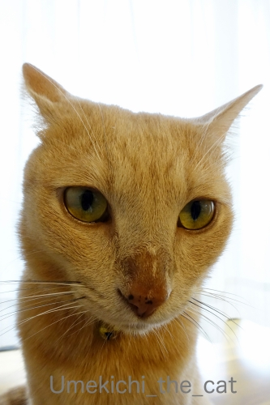
（お鼻）にじにじマーックス！！
時々お鼻に水分がにじむ梅吉さん。
涙の量が多い時こうなるそうでどこか悪いわけではありません。
ちょっとお間抜けなお顔にニヤニヤしちゃいます。
きょうは梅吉の話題は一旦中断。
2019年9月28日。
東大阪市は花園ラグビー場にてラグビーワールドカップ2019日本大会
アルゼンチン v トンガの試合を見に行ってきました。
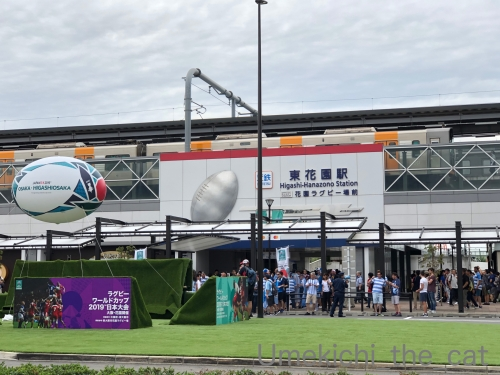
スタジアムの最寄駅は「近鉄 東花園駅」。
競技場ゲートオープンの11:45分前に着きましたが駅前はすでに人がわらわら・・・
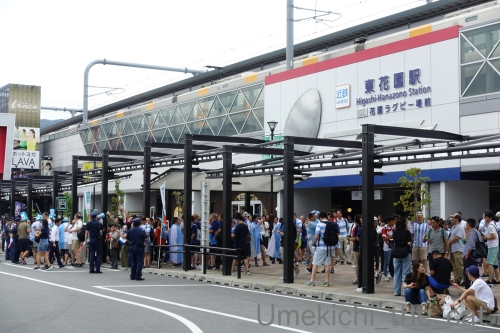
アルゼンチンファンの姿が圧倒的に目立ちます。
みなさんここで記念撮影をしたり歌っていたり
応援用のお着替えをしていたりフェイスペインティングをしていたり。
思い思いにとっても楽しそうです。
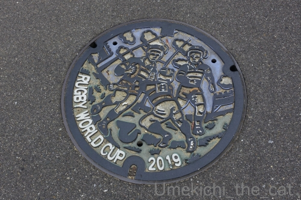
駅から競技場までは普段だったら5分くらいなんですが
この日は人が多いので10分くらいかかりました。
ワールドカップの雰囲気を味わいながら進みます。
マンホールのフタ、いままでもラグビーバージョンだったのですが
大会に合わせて「ワールドカップ2019年」のものに変わっていました＾＾
外国人ファンの方々はほとんどが缶ビール片手に歩いてますw
道沿いにある飲食店が屋台で生ビールやおつまみの販売をしていてそこも賑わっていましたよ。
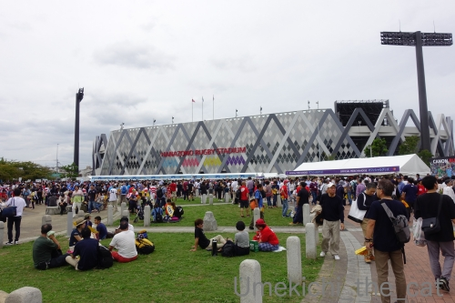
スタジアム前の広場。こんなに賑わっているの初めて見たー！！
流石にW杯です。
入場に時間がかかるかもと早めにきてよかった。
応援歌を熱唱して盛り上がるアルゼンチンファン。テレビの取材を受けてたみたいです。
入場前にウロウロして写真を撮ったり雰囲気を楽しんだり。
公式グッズ売り場はすごい行列。特に欲しいものもなかったのでグッズ売り場はスルー。
大会プログラムは買いました。1500円也。
入場は手荷物検査とチケット提示の二段階。
待ち時間もなくスムーズに入場出来ましたよ。
開催当初不可だった食べ物の持ち込みは苦情を受けて解禁になりましたが
ペットボトル＆缶飲料の持ち込みは不可です。
マイボトルに入れていった飲み物はチェックされ場合によっては
（危険物じゃないことを証明するため試しに）「ひとくち飲んでみてください」と
言われることもあるようです。
私は水を持って行きましたが「熱中症対策用です」と申し出たら問題なく持ち込めましたよ＾＾
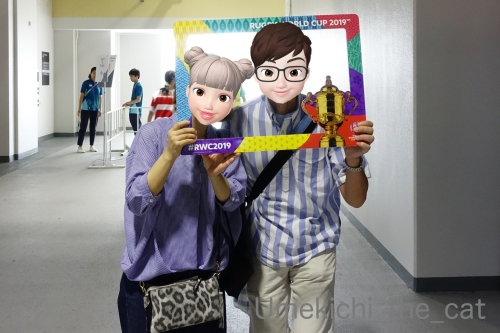
調子に乗って写真撮影などをお願いするw
二人の服がどうにもアルゼンチンファンっぽいんですが意図したわけではありません。
（アルゼンチンのテーマカラーは白と水色。
サッカーアルゼンチン代表のメッシを想像してね＾＾トンガは赤と白です。）
応援の立場は中立ですよ。
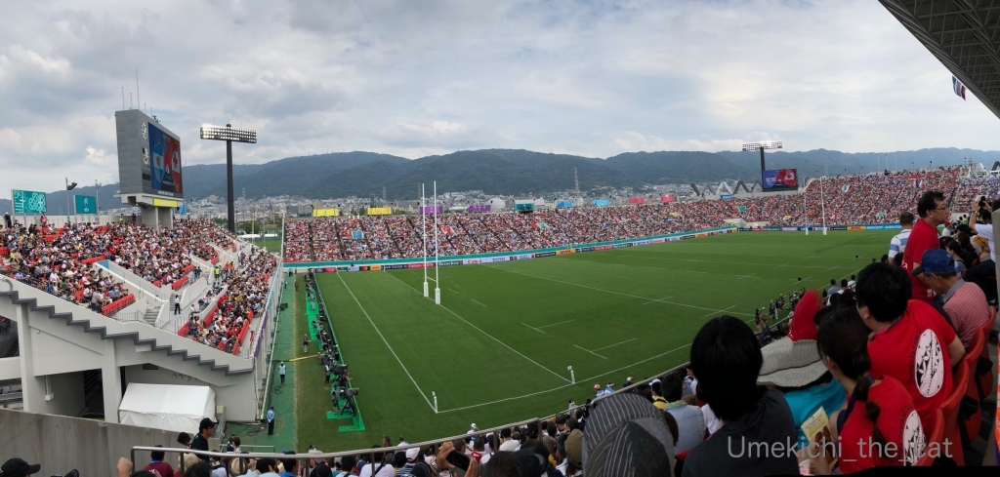
スタジアム内はこんな感じです。
クリックで拡大しますので是非見てください！！
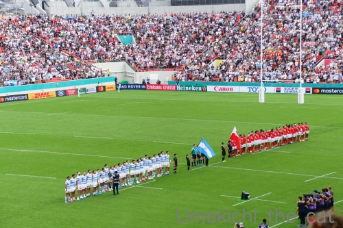
両チームのアンセム斉唱。もちろん観客も敬意を表してスタンディングです。
屈強な男たちが感極まった様子で涙ぐみながら歌う姿に胸を打たれます・・・
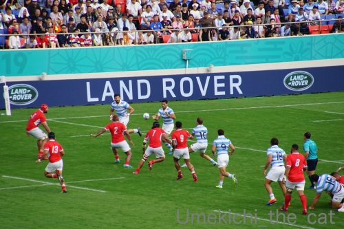
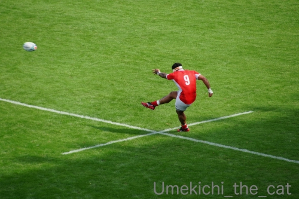
試合はアルゼンチンが圧倒するかと思いきやトンガも後半巻き返しました。
劣勢のトンガを応援すべく会場からは日本人観客を巻き込んでトンガコールが。
もちろんアルゼンチンファンも負けてはいませんよ。
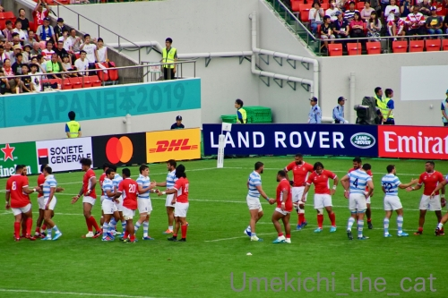
結果は28ー12でアルゼンチンの勝利となりました。
試合後は両チームの選手が相手を称えます。ラガーマンって清々しい。
会場からも温かい拍手が！
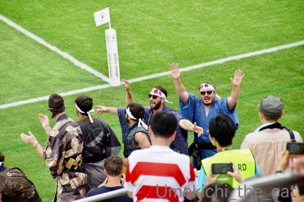
会場の応援で目立っていたのがガタイの良いお兄さんたちの浴衣姿。
あちこちにたくさんいましたよ。
中には「それって泊まってるホテルの浴衣じゃないの？」みたいな人もいてwww
「日本」「神風」「根性」って書いたハチマキ姿も人気でした。
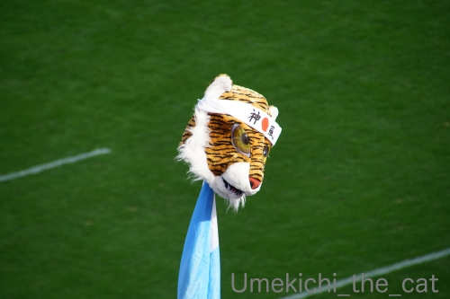
関西では「トラ」がウケると情報でも仕入れたのでしょうか。
こんな応援グッズ持参の方もいました(≧▽≦)
日本戦ではありませんでしたが（そもそも関西では日本戦はありません）
W杯の試合を見にいって本当に良かったです！
ガチな国際大会、各国のナショナルチームのプレイはやっぱりレベルも迫力も違います。
応援も力が入っていて引きずり込まれました。
これは会場でしか味わえない特別なものだと思います。
みなさんも機会があればぜひ足を運んでみてはいかがでしょうか。
アルゼンチンは世界ランキング4位。
が、昨日の日本 v アイルランドの試合を見ていて
「日本はアルゼンチンにも勝てるな！」と確信しました。
今後の試合がますます楽しみです＾＾
最後に梅吉が日本代表を全力応援します！！
（27秒 音が出ます 使用曲「Jupiter, the Bringer of Jollity」は著作権フリーサイトより）
跳ね返されても跳ね返されても決してあきらめない。
頑張れ！ブレイブブロッサムズ！！
ちなみにホルストの「組曲惑星」の中の「木星」はWorld In Unionとして
ラグビーワールドカップのテーマソングになっています。
梅吉が眠りに落ちる時 [梅吉]
涼しくなってブランケッドの上でお昼寝するようになりました＾＾
気持ちよーく眠りに落ちる時それは・・・・・
（24秒 多少の環境音あり）
梅吉さんの白目ターイム！！
私も寝入り端ってこんな白目になっているのかしら・・・(⌒-⌒;
暑い時期は見向きもされなかったタワーですが最近の梅吉さんはてっぺん目指して登ります。
周囲を見下ろした後はクリアボウルでお休み。
クリアボールでありながら、クリアボウルにあらずwww
ブランケット付きがお好みならばそれも良いでしょう！
満足そうなお顔しているし二段下げたその位置は
（今年の春頃はクリアボウルはてっぺんについてました）
おかーさんが梅吉さんにチューするのにちょうど良い位置ですからね0(≧▽≦)0
ところで！
zombiekongさんの満月広場で盛り上がっている「アクビーW杯2019日本大会」ですが
インスタでもはじまりました！
#rugbyworldcup2019
#akubyworldcup2019
#ラグビーワールドカップ2019
を付けてインスタ利用者の皆様はふるってポストしてくださいませー。
ほんまもんのラグビーとコラボしちゃおうw
にゃんこでも、わんこでも、その他の生き物のみなさまでも( ´艸｀)
インスタはパートナー担当だ！という方はぜひお知らせしてくださいねm(_ _)m
ちなみに梅吉のポストはこちら！→https://www.instagram.com/p/B21E5KZhDnu/
＊＊＊＊＊＊＊＊＊＊＊＊＊＊＊＊＊＊＊＊＊＊＊＊＊＊＊＊＊＊＊＊＊＊＊＊＊＊＊＊＊
元気だったオクラも花を咲かせなくなりました。
実を成らせたままにしておいたらこんな色に変色してきました。
触ると種のカサカサ音がしていたのでおっとが慌てて採りましたよ。
はぜてしまったら来年発芽してエライことになりますからー。
こんなふうに種ができるんですね。
一筋にこのくらいの量。これが五筋（うちのオクラは五角形。六角、七角のもあるんですって）
繁殖力旺盛だわ・・・・・
↑ガブッと一押し↑
気持ちよーく眠りに落ちる時それは・・・・・
（24秒 多少の環境音あり）
梅吉さんの白目ターイム！！
私も寝入り端ってこんな白目になっているのかしら・・・(⌒-⌒;
暑い時期は見向きもされなかったタワーですが最近の梅吉さんはてっぺん目指して登ります。
周囲を見下ろした後はクリアボウルでお休み。
クリアボールでありながら、クリアボウルにあらずwww
ブランケット付きがお好みならばそれも良いでしょう！
満足そうなお顔しているし二段下げたその位置は
（今年の春頃はクリアボウルはてっぺんについてました）
おかーさんが梅吉さんにチューするのにちょうど良い位置ですからね0(≧▽≦)0
ところで！
zombiekongさんの満月広場で盛り上がっている「アクビーW杯2019日本大会」ですが
インスタでもはじまりました！
#rugbyworldcup2019
#akubyworldcup2019
#ラグビーワールドカップ2019
を付けてインスタ利用者の皆様はふるってポストしてくださいませー。
ほんまもんのラグビーとコラボしちゃおうw
にゃんこでも、わんこでも、その他の生き物のみなさまでも( ´艸｀)
インスタはパートナー担当だ！という方はぜひお知らせしてくださいねm(_ _)m
ちなみに梅吉のポストはこちら！→https://www.instagram.com/p/B21E5KZhDnu/
＊＊＊＊＊＊＊＊＊＊＊＊＊＊＊＊＊＊＊＊＊＊＊＊＊＊＊＊＊＊＊＊＊＊＊＊＊＊＊＊＊
元気だったオクラも花を咲かせなくなりました。
実を成らせたままにしておいたらこんな色に変色してきました。
触ると種のカサカサ音がしていたのでおっとが慌てて採りましたよ。
はぜてしまったら来年発芽してエライことになりますからー。
こんなふうに種ができるんですね。
一筋にこのくらいの量。これが五筋（うちのオクラは五角形。六角、七角のもあるんですって）
繁殖力旺盛だわ・・・・・
壁バリバリに嗤ふ丑三つ時 [梅吉]
寝室のウォークインクローゼットの入口の壁。

気がつけばこんなことになってましたw
反対側の壁もこんな感じです。
壁紙がビリビリ剥がれてくるというより
ボロボロになって取れてくるので梅吉の口に入っても困ります。

この部分に梅吉がご満悦で乗っていたマットを長めの針の画びょうで取り付けました。
画びょうの強度で？かもですが取り付けてからほぼ一週間。
梅吉が全力で爪とぎしても取れていません。
こうやって使うんだよ、とおとーさんの実演を・・・

真剣に

いぶかしげに見つめる梅吉さん(*>艸<)

反対側のマットの前に腰を据えましたよ。
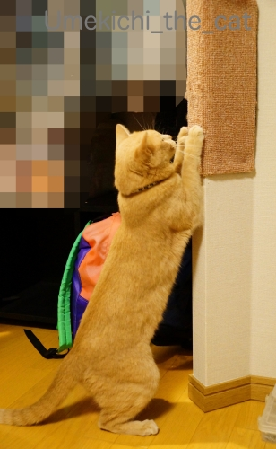
これは！！
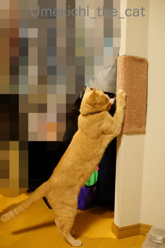
やったー！！上手に爪とぎしてくれました＾＾
人間の思惑など全然気にしてくれない猫様ですがこれは上手く行ったようです。
夜中に「バリバリバリバリ〜っ！！！！！」と爪とぎの音が聞こえて目が覚めちゃうのですが
ああ、使ってもらえているなと含み笑いをするこの頃です＾＾
〜どうでも良い情報〜
梅吉の向こうに見えているド派手なリュックは
90年代、LAスタイル（？）にかぶれていた私が使っていたものです。
リーボックのハイカットのエアロビシューズにくしゅくしゅソックス（ルーソーではない）
なんて格好をしてた時代。
ボディコンシャス系（私は着てないよ）から渋カジ全勢になる谷間の時代？だったかしらね・・・
今は非常用の持ち出し袋になってます。
以上、どうでも情報でしたwww
↑ガブッと一押し↑
気がつけばこんなことになってましたw
反対側の壁もこんな感じです。
壁紙がビリビリ剥がれてくるというより
ボロボロになって取れてくるので梅吉の口に入っても困ります。
この部分に梅吉がご満悦で乗っていたマットを長めの針の画びょうで取り付けました。
画びょうの強度で？かもですが取り付けてからほぼ一週間。
梅吉が全力で爪とぎしても取れていません。
こうやって使うんだよ、とおとーさんの実演を・・・
真剣に
いぶかしげに見つめる梅吉さん(*>艸<)
反対側のマットの前に腰を据えましたよ。
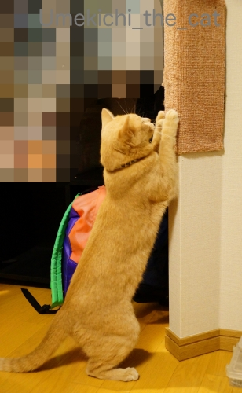
これは！！
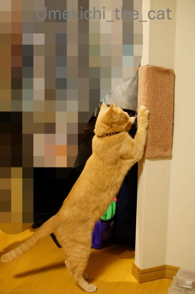
やったー！！上手に爪とぎしてくれました＾＾
人間の思惑など全然気にしてくれない猫様ですがこれは上手く行ったようです。
夜中に「バリバリバリバリ〜っ！！！！！」と爪とぎの音が聞こえて目が覚めちゃうのですが
ああ、使ってもらえているなと含み笑いをするこの頃です＾＾
〜どうでも良い情報〜
梅吉の向こうに見えているド派手なリュックは
90年代、LAスタイル（？）にかぶれていた私が使っていたものです。
リーボックのハイカットのエアロビシューズにくしゅくしゅソックス（ルーソーではない）
なんて格好をしてた時代。
ボディコンシャス系（私は着てないよ）から渋カジ全勢になる谷間の時代？だったかしらね・・・
今は非常用の持ち出し袋になってます。
以上、どうでも情報でしたwww
「上」と「下」は梅吉ホイホイ [梅吉]
梅吉が寝室の壁をガリガリするようになったので爪とぎ用のマットを買いました。
ダメーッ！と言うよりもよりその壁にマットを取り付けて
快適に爪とぎを楽しんでもらおうとの算段です0(≧▽≦)0
折り目のついていたマットを座布団の下でのしていたのですが・・・

座布団を取った瞬間、乗る(⌒-⌒;
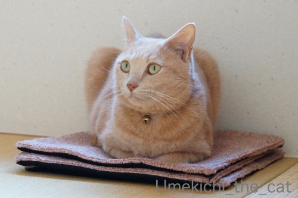
満足そうです。

座布団を隣に置いてもちんまりした空間に収まり続ける梅吉さん。
それは爪とぎ用なんですがちんまりようにもう一枚ご入用ですか〜？
壁に設置は次回記事にて♪
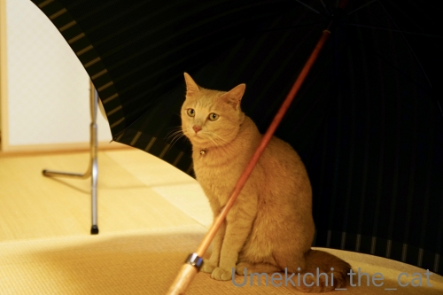
傘の下は安定のホイホイスポット。
おとーさんの大きな傘に。
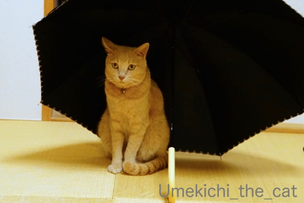
おかーさんの雨天兼用の小さな日傘の下にも入ります。
ユニクロの折りたたみ傘には反応が鈍いです。
お気に召さないんでしょうかwww
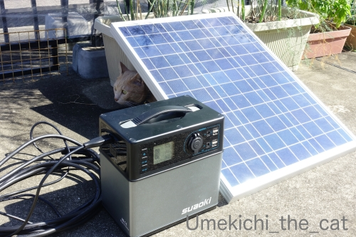
ベランダに出ても「下」があると入らずに入られない！
梅吉がどこにいるか分かりますか( ´艸｀)
＊＊＊＊＊＊＊＊＊＊＊＊＊＊＊＊＊＊＊＊＊＊＊＊＊＊＊＊＊＊＊＊＊＊
梅吉が潜り込んでいるのはソーラーパネルの下です。
災害は忘れた頃にやってくる、なんて言われていましたが
近年の日本の災害は先の被害の記憶が薄れる間も無くやってきます。
防災用品のチェックの頻度も増えますよ。この日はバッテリーチェック！！
ソーラーパネルとつながっているのは大容量バッテリー。
昨年の9月の大阪の台風、その後の北海道の地震で札幌の実家が停電になったことで
購入を決めました。
コードで繋いでソーラーパネルから、ACアダプターで電源からと２つの方法で蓄電できます。
昨年にも記事にしているので覚えている方もいらっしゃるかも。
suaoki と言うメーカーの商品です。
（昨年の記事はこちら）
フル充電しておけば扇風機の風量を「中」くらいで、スマホ（2台）、PC（1台）を
つなぎっぱなしにしても20時間くらいは持つかな。
ああ、PCの場合はルーターとかも繋がなきゃと今気づくw
非常にはスマホが使えたらOKかな。
電源喪失が数日間あることも想定してソーラーパネルを買いました。
お天気頼みになってしまいますが日が照っていれば８時間くらいで８割くらいまで充電できます。
洗濯機も動かせました。
家にあるパネルヒーターも動かせるので冬は暖をとることも可能。
（諸条件によって異なるのであくまで参考値としてみてくださいね）
テレビは・・・コンセントが面倒なところにあるので試してないのですが〜。（すいません）
昨年記事にした時にぽちの輔さんが「テレビは意外と消費電力少ないよ。PCと同じくらい」
とコメントしてくださったのでそれに勇気付けられてます（笑）
あ、盲信しているわけではないのでご安心くださいね＾＾
電源確保、ほんの助力としかなりませんが何もないよりずっとまし。
すくなくともスマホを持って充電しようとウロウロしなくても大丈夫そう。
災害時は最終的には公的な援助に頼ることになると思いますが
電源、トイレ、水、食料、多少の冷暖房の確保、ある程度個人で備えておかなくてはと
改めて思っているところです。
今回はトイレ関係の色々もう少し揃えようかと思っています。
しかし！考えることはみなさん同じのようでネットで見ると良さそうなものは売り切れが多いです（ｰ ｰ;)
ダメーッ！と言うよりもよりその壁にマットを取り付けて
快適に爪とぎを楽しんでもらおうとの算段です0(≧▽≦)0
折り目のついていたマットを座布団の下でのしていたのですが・・・
座布団を取った瞬間、乗る(⌒-⌒;
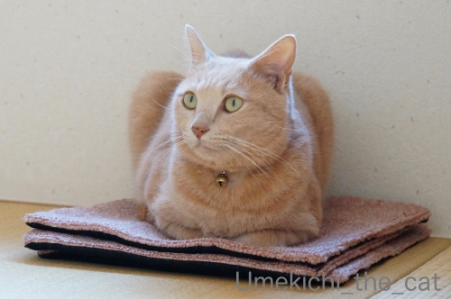
満足そうです。
座布団を隣に置いてもちんまりした空間に収まり続ける梅吉さん。
それは爪とぎ用なんですがちんまりようにもう一枚ご入用ですか〜？
壁に設置は次回記事にて♪
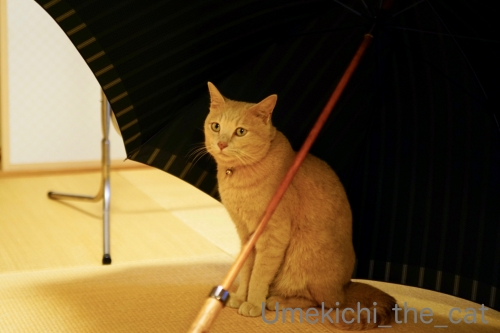
傘の下は安定のホイホイスポット。
おとーさんの大きな傘に。
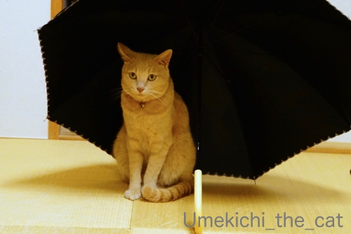
おかーさんの雨天兼用の小さな日傘の下にも入ります。
ユニクロの折りたたみ傘には反応が鈍いです。
お気に召さないんでしょうかwww
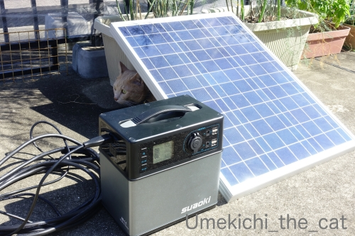
ベランダに出ても「下」があると入らずに入られない！
梅吉がどこにいるか分かりますか( ´艸｀)
＊＊＊＊＊＊＊＊＊＊＊＊＊＊＊＊＊＊＊＊＊＊＊＊＊＊＊＊＊＊＊＊＊＊
梅吉が潜り込んでいるのはソーラーパネルの下です。
災害は忘れた頃にやってくる、なんて言われていましたが
近年の日本の災害は先の被害の記憶が薄れる間も無くやってきます。
防災用品のチェックの頻度も増えますよ。この日はバッテリーチェック！！
ソーラーパネルとつながっているのは大容量バッテリー。
昨年の9月の大阪の台風、その後の北海道の地震で札幌の実家が停電になったことで
購入を決めました。
コードで繋いでソーラーパネルから、ACアダプターで電源からと２つの方法で蓄電できます。
昨年にも記事にしているので覚えている方もいらっしゃるかも。
suaoki と言うメーカーの商品です。
（昨年の記事はこちら）
フル充電しておけば扇風機の風量を「中」くらいで、スマホ（2台）、PC（1台）を
つなぎっぱなしにしても20時間くらいは持つかな。
ああ、PCの場合はルーターとかも繋がなきゃと今気づくw
非常にはスマホが使えたらOKかな。
電源喪失が数日間あることも想定してソーラーパネルを買いました。
お天気頼みになってしまいますが日が照っていれば８時間くらいで８割くらいまで充電できます。
洗濯機も動かせました。
家にあるパネルヒーターも動かせるので冬は暖をとることも可能。
（諸条件によって異なるのであくまで参考値としてみてくださいね）
テレビは・・・コンセントが面倒なところにあるので試してないのですが〜。（すいません）
昨年記事にした時にぽちの輔さんが「テレビは意外と消費電力少ないよ。PCと同じくらい」
とコメントしてくださったのでそれに勇気付けられてます（笑）
あ、盲信しているわけではないのでご安心くださいね＾＾
電源確保、ほんの助力としかなりませんが何もないよりずっとまし。
すくなくともスマホを持って充電しようとウロウロしなくても大丈夫そう。
災害時は最終的には公的な援助に頼ることになると思いますが
電源、トイレ、水、食料、多少の冷暖房の確保、ある程度個人で備えておかなくてはと
改めて思っているところです。
今回はトイレ関係の色々もう少し揃えようかと思っています。
しかし！考えることはみなさん同じのようでネットで見ると良さそうなものは売り切れが多いです（ｰ ｰ;)
困ったときは控えめに [梅吉]
ベランダ遊びに飽きた梅吉さん。
![[猫]](https://blog.ss-blog.jp/_images_e/101.gif) わし おうちにはいりたい
わし おうちにはいりたい

なんで まど しまっとるんやろ
それはエアコンがついてるからです。
おかーさん いてへんのやろか・・・
いますよ。さっき目が合ったじゃないですか。
もしもーし
目が合った後私がちょっと動いたらもう見失ってます(⌒-⌒;

どーいうこっちゃー！
あの〜
この間無言の梅吉さんwww
前記事にzombiekongさんから「窓にへばりつく姿を見たい」と
リクエストいただきましたので早速記事にしてみました＾＾
家に入りたくなったらドアのところで鳴いて知らせてくれれば良いのに
もしくは付き添い兼盆栽のお手入れで一緒にベランダにいるおっとに訴えれば良いのにって思うのですが
大抵静かに困っている梅吉です( ´艸｀)
幾分過ごしやすい気温になってきたらちゅちゅう要求onおかーさんのお腹の上、も増えてきました＾＾

このブランケットの決まった場所にしかちゅうちゅうしません。
かっぺかぺになった場所があるのですがそこがちゅうちゅうポイント(*>艸<)
梅吉が吸うから洗剤で洗いたくないしちゅうちゅうポイントが消えちゃうので水洗いのみ。
お日様が出ているときは紫外線消毒＆掃除機で吸う・・・とお手入れも結構気を使いますよw
↑ガブッと一押し↑
それはエアコンがついてるからです。
いますよ。さっき目が合ったじゃないですか。
目が合った後私がちょっと動いたらもう見失ってます(⌒-⌒;
この間無言の梅吉さんwww
前記事にzombiekongさんから「窓にへばりつく姿を見たい」と
リクエストいただきましたので早速記事にしてみました＾＾
家に入りたくなったらドアのところで鳴いて知らせてくれれば良いのに
もしくは付き添い兼盆栽のお手入れで一緒にベランダにいるおっとに訴えれば良いのにって思うのですが
大抵静かに困っている梅吉です( ´艸｀)
幾分過ごしやすい気温になってきたらちゅちゅう要求onおかーさんのお腹の上、も増えてきました＾＾
このブランケットの決まった場所にしかちゅうちゅうしません。
かっぺかぺになった場所があるのですがそこがちゅうちゅうポイント(*>艸<)
梅吉が吸うから洗剤で洗いたくないしちゅうちゅうポイントが消えちゃうので水洗いのみ。
お日様が出ているときは紫外線消毒＆掃除機で吸う・・・とお手入れも結構気を使いますよw
猫だって新鮮なオクラがお好き！？ [梅吉]
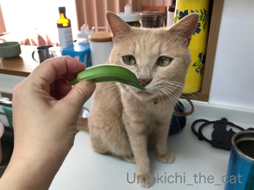
収穫したばかりのオクラちゃんに興味津々の梅吉さん。
キッチンにあるのを転がして遊ぼうとしてましたw
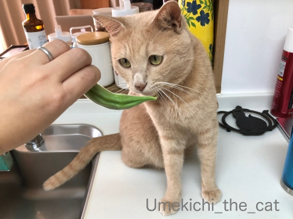
これはおもちゃではないんですよ〜。
それに収穫したてはヘタのあたりのトゲが元気で痛いので気をつけてくださいね。
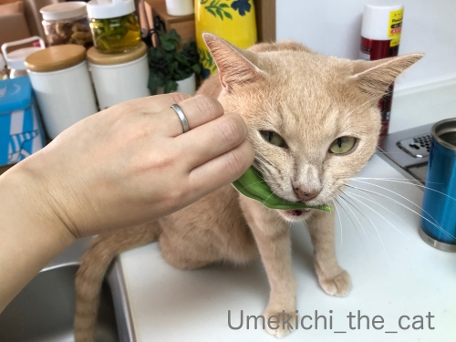
おもちゃじゃない？何奴か確かめるべく、かじってみるべし！！
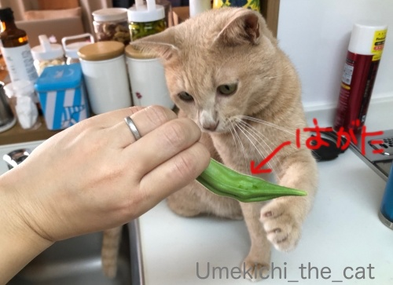
あああ、歯形がすごいです(꒦ິ⌑꒦ີ)

正体不明のものはかじってみる！
梅吉さんの探究心はとどまるところを知りませんwww
歯形付きのオクラは軽く湯通ししてお夕飯のサラダにしました(^_－)☆
プランター栽培のオクラ、どんどん花を咲かせてどんどん実が出来ます。
この暑さ、オクラにとってはウェルカムのようで成長するスピードも速いです。
気が付いた時には巨大化。あまり大きくなったものは硬くて食べられません(⌒-⌒;
早め早めに収穫すれば良いのだけれど暑すぎてベランダに出る気力が湧かず・・・
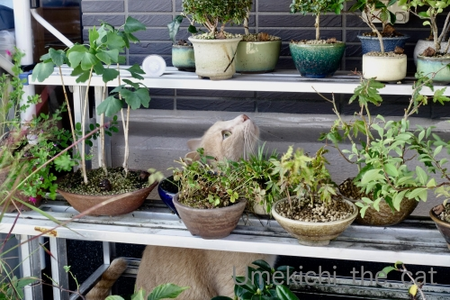
おかーさんはヘタレになってますが梅吉さんはちょっとだけ頑張ってベランダ探検してます。
せっかくベランダに出たんだから広いところでのびのびすれば良いのに盆栽棚の奥に潜ってゴソゴソ・・・
にょろおの痕跡があるのかしら？？？
ベランダに出ているのはほんの短い時間。
すぐに入りたくなって出入りする窓のところにへばりつく姿は笑えますよ(*>艸<)
↑ガブッと一押し↑
収穫したばかりのオクラちゃんに興味津々の梅吉さん。
キッチンにあるのを転がして遊ぼうとしてましたw
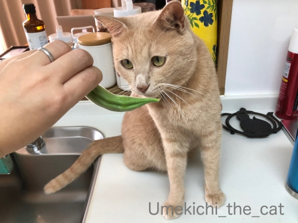
これはおもちゃではないんですよ〜。
それに収穫したてはヘタのあたりのトゲが元気で痛いので気をつけてくださいね。
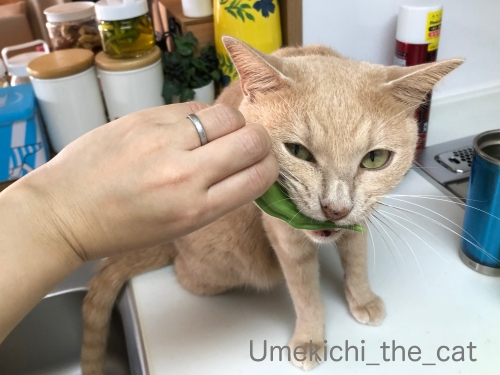
おもちゃじゃない？何奴か確かめるべく、かじってみるべし！！
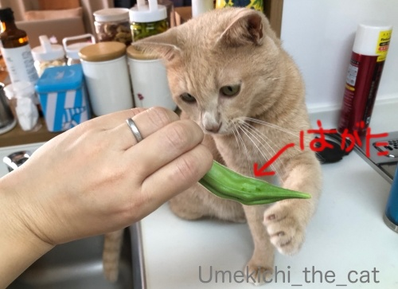
あああ、歯形がすごいです(꒦ິ⌑꒦ີ)
正体不明のものはかじってみる！
梅吉さんの探究心はとどまるところを知りませんwww
歯形付きのオクラは軽く湯通ししてお夕飯のサラダにしました(^_－)☆
プランター栽培のオクラ、どんどん花を咲かせてどんどん実が出来ます。
この暑さ、オクラにとってはウェルカムのようで成長するスピードも速いです。
気が付いた時には巨大化。あまり大きくなったものは硬くて食べられません(⌒-⌒;
早め早めに収穫すれば良いのだけれど暑すぎてベランダに出る気力が湧かず・・・
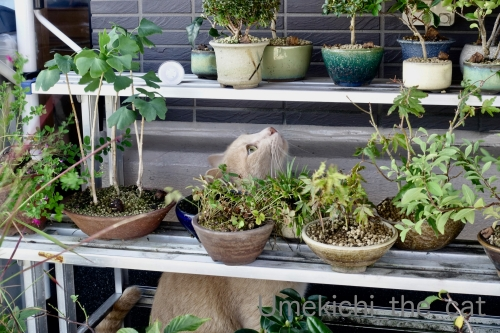
おかーさんはヘタレになってますが梅吉さんはちょっとだけ頑張ってベランダ探検してます。
せっかくベランダに出たんだから広いところでのびのびすれば良いのに盆栽棚の奥に潜ってゴソゴソ・・・
にょろおの痕跡があるのかしら？？？
ベランダに出ているのはほんの短い時間。
すぐに入りたくなって出入りする窓のところにへばりつく姿は笑えますよ(*>艸<)
季節は秋でもスイカ [梅吉]
台風15号、9日の朝から関東付近に接近・上陸する予報ですね。
近辺にお住いの方々に被害や事故等ありませんように。

札幌に住んでいるときはスイカなんて滅多に食べませんでした。
（理由は私がそんなに好きじゃなかったからw）
結婚後は買ったことすらなかったのです。
おすそ分けでもらったのを「あるのなら食べる」感じ。

が、大阪に住み始めて初めての夏
あまりの暑さにバテそうになっていた時に食べたスイカがこの上ない美味しさで！
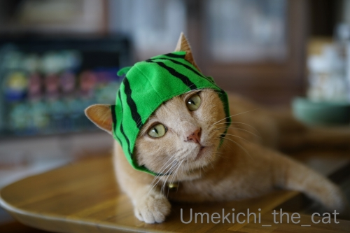
みずみずしくてカリウムたっぷりのスイカは暑い地域で食べてこそ
醍醐味が味わえるんだなと思ったものです。
この夏も桃と並んで頻繁に食べましたよ。
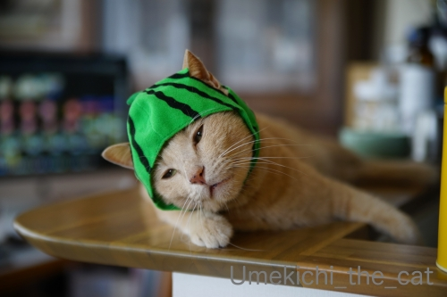
スーパーの果物売り場ではイチジク、ぶどう、なし、栗と晩夏から初秋の果物が主流になっていますけど
こう暑くてはまだまだスイカも美味しくいただけそうです。
9月8日（日）現在時刻13:20分、我が家の付近は35.2℃の表示(ｰ ｰ;)

すいかぼうしかぶっても すずしくはならへんなぁ・・・

この時期はイチジクも楽しみの一つです。
今年の様な残暑の厳しい年の方が味の濃い完熟イチジクが出回る様な気がします。
このひと山で¥390也。お手頃でしょ![[手（チョキ）]](https://blog.ss-blog.jp/_images_e/87.gif)
↑ガブッと一押し↑
近辺にお住いの方々に被害や事故等ありませんように。
札幌に住んでいるときはスイカなんて滅多に食べませんでした。
（理由は私がそんなに好きじゃなかったからw）
結婚後は買ったことすらなかったのです。
おすそ分けでもらったのを「あるのなら食べる」感じ。
が、大阪に住み始めて初めての夏
あまりの暑さにバテそうになっていた時に食べたスイカがこの上ない美味しさで！
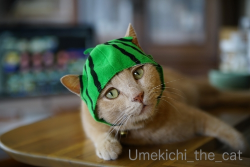
みずみずしくてカリウムたっぷりのスイカは暑い地域で食べてこそ
醍醐味が味わえるんだなと思ったものです。
この夏も桃と並んで頻繁に食べましたよ。
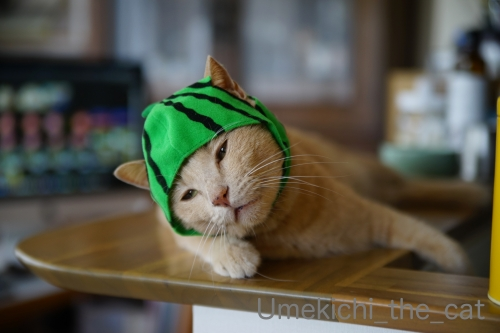
スーパーの果物売り場ではイチジク、ぶどう、なし、栗と晩夏から初秋の果物が主流になっていますけど
こう暑くてはまだまだスイカも美味しくいただけそうです。
9月8日（日）現在時刻13:20分、我が家の付近は35.2℃の表示(ｰ ｰ;)
この時期はイチジクも楽しみの一つです。
今年の様な残暑の厳しい年の方が味の濃い完熟イチジクが出回る様な気がします。
このひと山で¥390也。お手頃でしょ
お風呂は入らないけど洗面ボールには入るよ [梅吉]
夏の風物詩、洗面ドレッサーを占領する梅吉さん。
誰も使わない日中に入り浸れば良いのにここに来るのは朝限定。
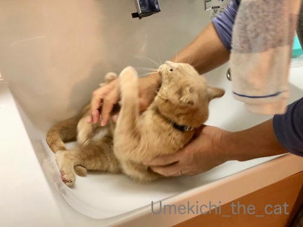
「よけてよー！」と言いながらおとーさんがやってくるのを待っているのかな？(*>艸<)
がぶがぶとじゃれついた後でこうやって捕獲されるのが楽しいんでしょうか。
ちょっと見難いけどドラキュラの牙みたいになってる口元に注目です(≧▽≦)
飼い主とお風呂に入るのが大好きな梅吉ですが真夏には来てくれません。
が、仕舞い湯のお掃除を始めると飛んできますよ。
（20秒です＾＾ 音が出ますよ）
ていていと可愛らしくじゃれるのではなくて
という力強い絡みが梅吉らしいです。
腰がしっかり入っているのも良い感じ♪
にんげんも暑い期間限定ですること、しないことありますものね。
ニャンコも一緒、なのでしょうねー＾＾
前記事の「にょろお」皆さまに頂いたコメントからヤモリさんと断定！
たくさんのコメントありがとうございました＾＾
ヤモリさんが窓に張り付いているときは窓を動かさない方が良さそうですね。
結構ドンくさい様で部屋の中に落ちてきましたなんてコメントが！！
至近距離だとちょと怖いし家の中でニョロニョロしたら間違いなく梅吉の獲物になってしまう・・・
かわいそうだし何かのはずみで胴体と尻尾が分離したら私には刺激が強すぎる〜(⌒-⌒;
ヤモリもしっぽが取れるとは知りませんでしたよー！！
にょろお、窓に張り付いて以降見かけてないのですがそのうちまた姿を見せてくれると思ってます。

カフェオレ色の梅吉

梅吉 2023年8月10日 永眠


梅吉と出会った譲渡会

犬猫の理由なき殺処分ゼロ
妄想広告
UMEKICHI 光

爆発的に早い！
時々攻撃的！
Thanks to Mr.Boss365
爆発的に早い！
時々攻撃的！
Thanks to Mr.Boss365